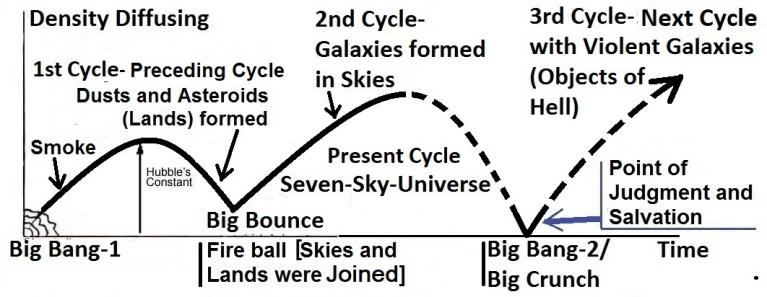

9b. Malik bin Anas
9 খ. মালিক বিন আনাস রা
Malik bin Anas (93 AH – 179 AH), a native of Madinah, was primarily a Hadith collector. It is said that he gathered over 100,000 Hadiths. He was the first to compile a Book of Hadith, Al-Muwatta, which is still available today; however, it contains only 1,720 Hadiths. Abu Hanifa met him in Madinah. Malik bin Anas issued a fatwa opposing a ruling by Caliph Al-Mansur. A man of Hadith is nobody to give Fatwa. In response, the Governor of Madinah publicly flogged him. However, Al-Mansur later dismissed the Governor and compensated Malik with 3,000 dinars, demonstrating his respect for him. Then why did the same Al-Mansur flogged Abu Hanifa daily? This suggests that early Muslims did not widely welcome Hadith collectors. Perhaps Al-Mansur showed respect to Malik because he was a native of Madinah.
মালিক বিন আনাস (৯৩ হিঃ – ১৭৯ হিঃ), মদীনার অধিবাসী, প্রাথমিকভাবে একজন হাদীস সংগ্রাহক ছিলেন। কথিত আছে যে তিনি এক লাখেরও বেশি হাদীস সংগ্রহ করেছিলেন। তিনিই সর্বপ্রথম হাদীসের একটি বই আল-মুওয়াত্তা সংকলন করেন, যা আজও পাওয়া যায়; তবে এতে মাত্র ১,৭২০টি হাদীস রয়েছে। আবু হানিফা মদীনায় তাঁর সাথে দেখা করেন। মালিক বিন আনাস খলিফা আল-মনসুরের একটি রায়ের বিরোধিতা করে একটি ফতোয়া জারি করেন। হাদিসের লোক ফতোয়া দেওয়ার মতো কেউ নয়। জবাবে মদীনার গভর্নর প্রকাশ্যে তাকে বেত্রাঘাত করেন। যাইহোক, আল-মনসুর পরে গভর্নরকে বরখাস্ত করেন এবং মালিককে তার প্রতি শ্রদ্ধা প্রদর্শন করে 3,000 দিনার দিয়ে ক্ষতিপূরণ দেন। তাহলে একই আল মনসুর আবু হানিফাকে প্রতিদিন বেত্রাঘাত করতেন কেন? এটি ইঙ্গিত করে যে প্রাথমিক মুসলমানরা হাদীস সংগ্রহকারীদের ব্যাপকভাবে স্বাগত জানায়নি। সম্ভবত আল-মনসুর মালিককে সম্মান দেখিয়েছিলেন কারণ তিনি মদীনার অধিবাসী ছিলেন।
9c. Al-Shafii
9 গ. আল-শাফি
Shafi'i (150 AH – 205 AH), a member of the Quraysh tribe, was a disciple of Malik and largely followed Abu Hanifa's methodology in formulating religious laws and rituals. He served as the Governor of Yemen and later lived in Baghdad and Egypt. His Book of Hadith is ―Musnad Al Shafii‖. 9d. Ahmad ibn Hanbal
শাফিঈ (১৫০ হিঃ – ২০৫ হিঃ), কুরাইশ গোত্রের একজন সদস্য, মালিকের একজন শিষ্য ছিলেন এবং ধর্মীয় আইন ও আচার-অনুষ্ঠান প্রণয়নে আবু হানিফার পদ্ধতি অনুসরণ করেন। তিনি ইয়েমেনের গভর্নর হিসেবে দায়িত্ব পালন করেন এবং পরে বাগদাদ ও মিশরে বসবাস করেন। তাঁর হাদিসের কিতাব হল ‘মুসনাদ আল শাফি’। 9d. আহমদ ইবনে হাম্বল রহ
Ahmad ibn Hanbal (164 AH – 241 AH) was born in Basra, into the tribe of Banu Shayban. He was a student of Shafi'i and was greatly influenced by Imam Abu Hanifa. He is the author of Musnad Ahmad, a renowned collection of Hadith. His followers are known as Hanbali, and many of them today are identified as Wahhabi or Salafi.
আহমদ ইবনে হাম্বল (১৬৪ হিজরি – ২৪১ হিজরি) বসরায় বনু শায়বান গোত্রে জন্মগ্রহণ করেন। তিনি শাফেঈর ছাত্র ছিলেন এবং ইমাম আবু হানিফা দ্বারা ব্যাপকভাবে প্রভাবিত ছিলেন। তিনি মুসনাদে আহমাদ গ্রন্থের রচয়িতা, একটি বিখ্যাত হাদীস সংকলন। তার অনুসারীরা হাম্বলী নামে পরিচিত, এবং তাদের অনেকেই আজ ওহাবী বা সালাফী হিসাবে চিহ্নিত।
9e. Others
9ই. অন্যরা
Bukhari (194 AH – 256 AH) from Bukhara, Muslim (202 AH – 261 AH) from Iran, and Tirmidhi (210 AH – 279 AH) from Uzbekistan are important collectors and compilers of Hadith.
বুখারা থেকে বুখারি (194 হি - 256 হি), ইরান থেকে মুসলিম (202 হি - 261 হি) এবং উজবেকিস্তান থেকে তিরমিজি ( 210 হি - 279 হি) হাদীসের গুরুত্বপূর্ণ সংগ্রাহক এবং সংকলনকারী।
10. Sunni Islam and Politics
10. সুন্নি ইসলাম ও রাজনীতি
In the democratic world of the 20th century, some religious interpreters introduced politics into Sunni Islam through incorrect interpretations of the Hadith and isolated verses of the Quran, often taken out of context. The Quran does not provide guidance on the formation of government. The Prophet (pbuh) also did not establish a government. He did not have a throne, crown, ceremonial guards, ministers, a parliament (Majlis e Shura), or courts. He did not print money or collect taxes, nor did he have a police force or a paid army. So, he did not establish any government structures. The Madinah Charter did not establish a state or government either. A close reading reveals that it primarily addressed two points: The tribal chiefs would retain their powers as usual. The security of the Quraysh (the Muslims who came from Makkah) would be ensured by the Muttaqin (guards from among the Muslims). People can never be fully satisfied. Over time, a government may gain a bad reputation and eventually fall. If the government is Islamic, this negative perception also extends to Islam. When the government falls, Islam may suffer a setback as well, at least for a time. Therefore, establishing an Islamic government is not advisable. The Quran is not intended to govern states or manage courts. However, governments and courts should adhere to the Quran where applicable, particularly in matters such as dealing with riba (interest on loans), theft, creating disorder, scandal, fornication, and adultery. The Islamic system does not form or run governments, but there are Islamic leaders at various levels who oversee the actions of governments in relation to adherence to Islamic laws. The Highest Islamic Leadership (Caliph) monitors and evaluates these actions when necessary. Why did Prophet Muhammad (pbuh) fight battles? To answer, it was to defeat the Taghut. Moses went to Egypt with nine great miracles. But, the people could not accept him for the fear of the Taghuts like Pharaoh and his Chiefs. So, removing / neutralizing the Taghuts, like Persian Emperor, Roman Emperor, Kings, and Tribal Chiefs was necessary for Muhammad (pbuh) to preach Islam among Arabian and Persian peoples. Prophet Muhammad (pbuh) appointed governors in the captured territories, but the goal was not to establish governments. They resided in the mosques, collected zakat, and taught the religion to the newly converted Muslims. However, the Quran established the Ummah in Surah Al-Baqarah. The Ummah requires leadership, specifically the Highest Islamic Leadership (Caliph), who represents Prophet Muhammad (pbuh) and serves as the leader of the Islamic world. Under the Caliph, there may be multiple countries governed by kings, amirs, elected presidents, and prime ministers. These rulers should pledge allegiance to the Highest Islamic Leadership/Caliph. Each ruler may have their own legislature, government, courts, and paid army. The Highest Islamic Leadership oversees and controls the rulers, particularly in matters related to Jihad and the laws of the Quran. However, the Quran established the Ummah in Surah Al-Baqarah. The Ummah requires leadership, specifically the Highest Islamic Leadership (Caliph), who represents Prophet Muhammad (pbuh) and serves as the leader of the Islamic world. Under the Caliph, there may be multiple countries governed by kings, amirs, elected presidents, and prime ministers. These rulers should pledge allegiance to the Highest Islamic Leadership / Caliph. Each ruler may have their legislature, government, courts, and paid army. The Highest Islamic Leadership oversees and controls the rulers, particularly in matters related to Jihad and the laws of the Quran. Many Sunni Muslim Sultans grasped the Caliphate and mixed it with the Sultanate, but the Caliphate is mosque based and should not run the Government directly by himself. In standard scenario Caliphate should base in the Mosque of Madinah or Kufa. The Caliph often leads the prayers in the mosque. The Umayyad Sultans began using Hadith to govern and establish laws in the courts. Many Sunni Muslims view these laws as part of the religion. However, the true essence of the religion is found only in the Quran. Misunderstandings and incorrect examples have led many to believe that 'establishing Islam' means 'establishing Islamic rule through government machinery.' But, Islam is established by the Highest Islamic Leadership, the various leaderships under him, and the mosques at the grassroots, where people remain in direct contact. The primary aim of the Quran is the development of the individual. However, one should not fight to establish the Highest Islamic Leadership / Caliphate, as it leads to conflict. Throughout history, we have seen wars, such as Muawiyah fighting Hazrat Ali, Abbasids fighting Umayyads, Arabs fighting Ottomans, and so on. Furthermore, the Caliphate is an international leadership: an Arab would not accept a Persian, nor would a Persian accept an Arab. The Caliph will be raised by Allah when the Ummah will deserve it, as highlighted in Ayat al- Kursi of Surah Al-Baqarah. When Caliph rises, everyone needs to recognize him and support him according to his circumstances. His name will be mentioned in the Khutbah of all mosques.
বিংশ শতাব্দীর গণতান্ত্রিক বিশ্বে, কিছু ধর্মীয় ব্যাখ্যাকার হাদিস এবং কুরআনের বিচ্ছিন্ন আয়াতের ভুল ব্যাখ্যার মাধ্যমে সুন্নি ইসলামে রাজনীতির সূচনা করেছিল, প্রায়শই প্রেক্ষাপটের বাইরে নেওয়া হয়। কুরআন সরকার গঠনের নির্দেশনা প্রদান করে না। মহানবী (সাঃ)ও সরকার প্রতিষ্ঠা করেননি। তাঁর সিংহাসন, মুকুট, আনুষ্ঠানিক প্রহরী, মন্ত্রী, সংসদ (মজলিস ই শূরা) বা আদালত ছিল না। তিনি টাকা মুদ্রণ করেননি বা কর সংগ্রহ করেননি, তার কাছে পুলিশ বাহিনী বা বেতনভুক্ত সেনাবাহিনীও ছিল না। তাই তিনি কোনো সরকারি কাঠামো প্রতিষ্ঠা করেননি। মদীনা সনদ একটি রাষ্ট্র বা সরকারও প্রতিষ্ঠা করেনি। একটি ঘনিষ্ঠ পাঠ প্রকাশ করে যে এটি প্রাথমিকভাবে দুটি বিষয়কে সম্বোধন করেছে: উপজাতি প্রধানরা তাদের ক্ষমতা যথারীতি ধরে রাখবে। কুরাইশদের (মক্কা থেকে আগত মুসলমানদের) নিরাপত্তা নিশ্চিত করবে মুত্তাকিন (মুসলিমদের মধ্য থেকে প্রহরী)। মানুষ কখনোই পরিপূর্ণভাবে সন্তুষ্ট হতে পারে না। সময়ের সাথে সাথে, একটি সরকার খারাপ খ্যাতি অর্জন করতে পারে এবং অবশেষে পতন হতে পারে। সরকার ইসলামী হলে এই নেতিবাচক ধারণা ইসলামেও প্রসারিত হয়। যখন সরকার পতন হয়, তখন অন্তত কিছু সময়ের জন্য ইসলামও ক্ষতিগ্রস্ত হতে পারে। তাই ইসলামী সরকার প্রতিষ্ঠা করা সমীচীন নয়। কুরআন রাষ্ট্র পরিচালনা বা আদালত পরিচালনার উদ্দেশ্যে নয়। যাইহোক, সরকার এবং আদালতের উচিত যেখানে প্রযোজ্য কোরানকে মেনে চলা উচিত, বিশেষ করে রিবা (ঋণের সুদ), চুরি, বিশৃঙ্খলা সৃষ্টি, কেলেঙ্কারি, ব্যভিচার এবং ব্যভিচারের মতো বিষয়ে। ইসলামী ব্যবস্থা সরকার গঠন করে না বা পরিচালনা করে না, তবে বিভিন্ন স্তরে ইসলামী নেতারা আছেন যারা ইসলামী আইন মেনে চলার ক্ষেত্রে সরকারের ক্রিয়াকলাপ তত্ত্বাবধান করেন। সর্বোচ্চ ইসলামী নেতৃত্ব (খলিফা) যখন প্রয়োজন হয় তখন এই কাজগুলো পর্যবেক্ষণ করে এবং মূল্যায়ন করে। হযরত মুহাম্মদ (সাঃ) কেন যুদ্ধ করেছিলেন? জবাবে তাগুতকে পরাজিত করা ছিল। মূসা নয়টি বড় অলৌকিক ঘটনা নিয়ে মিশরে গিয়েছিলেন। কিন্তু, ফেরাউন ও তার সর্দারদের মতো তাগুতদের ভয়ে জনগণ তাকে গ্রহণ করতে পারেনি। সুতরাং, আরব ও পারস্যের জনগণের মধ্যে ইসলাম প্রচারের জন্য মুহাম্মদ (সা.)-এর জন্য পারস্য সম্রাট, রোমান সম্রাট, রাজা এবং উপজাতি প্রধানদের মতো তাগুতদের অপসারণ/নিরপেক্ষ করা জরুরি ছিল। নবী মুহাম্মদ (সাঃ) দখলকৃত অঞ্চলগুলিতে গভর্নর নিয়োগ করেছিলেন, কিন্তু লক্ষ্য ছিল সরকার প্রতিষ্ঠা করা নয়। তারা মসজিদে বাস করত, যাকাত আদায় করত এবং সদ্য ধর্মান্তরিত মুসলমানদের ধর্ম শিক্ষা দিত। তবে কুরআন সূরা বাকারায় উম্মতকে প্রতিষ্ঠিত করেছে। উম্মাহর নেতৃত্ব প্রয়োজন, বিশেষ করে সর্বোচ্চ ইসলামী নেতৃত্ব (খলিফা), যিনি নবী মুহাম্মদ (সা.)-এর প্রতিনিধিত্ব করেন এবং ইসলামী বিশ্বের নেতা হিসেবে কাজ করেন। খলিফার অধীনে, রাজা, আমীর, নির্বাচিত রাষ্ট্রপতি এবং প্রধানমন্ত্রীদের দ্বারা শাসিত একাধিক দেশ থাকতে পারে। এই শাসকদের উচিত সর্বোচ্চ ইসলামী নেতৃত্ব/খলিফার প্রতি আনুগত্যের অঙ্গীকার করা। প্রতিটি শাসকের নিজস্ব আইনসভা, সরকার, আদালত এবং বেতনভুক্ত সেনাবাহিনী থাকতে পারে। সর্বোচ্চ ইসলামী নেতৃত্ব শাসকদের তত্ত্বাবধান ও নিয়ন্ত্রণ করে, বিশেষ করে জিহাদ এবং কুরআনের আইন সম্পর্কিত বিষয়ে। তবে কুরআন সূরা বাকারায় উম্মতকে প্রতিষ্ঠিত করেছে। উম্মাহর নেতৃত্ব প্রয়োজন, বিশেষ করে সর্বোচ্চ ইসলামী নেতৃত্ব (খলিফা), যিনি নবী মুহাম্মদ (সা.)-এর প্রতিনিধিত্ব করেন এবং ইসলামী বিশ্বের নেতা হিসেবে কাজ করেন। খলিফার অধীনে, রাজা, আমীর, নির্বাচিত রাষ্ট্রপতি এবং প্রধানমন্ত্রীদের দ্বারা শাসিত একাধিক দেশ থাকতে পারে। এই শাসকদের উচিত সর্বোচ্চ ইসলামী নেতৃত্ব/খলিফার প্রতি আনুগত্য করা। প্রতিটি শাসকের তাদের আইনসভা, সরকার, আদালত এবং বেতনভুক্ত সেনাবাহিনী থাকতে পারে। সর্বোচ্চ ইসলামী নেতৃত্ব শাসকদের তত্ত্বাবধান ও নিয়ন্ত্রণ করে, বিশেষ করে জিহাদ এবং কুরআনের আইন সম্পর্কিত বিষয়ে। অনেক সুন্নি মুসলিম সুলতান খিলাফতকে আঁকড়ে ধরেছিলেন এবং এটিকে সালতানাতের সাথে মিশিয়েছিলেন, কিন্তু খিলাফত মসজিদ ভিত্তিক এবং সরাসরি সরকার পরিচালনা করা উচিত নয়। আদর্শ পরিস্থিতিতে খেলাফতের ভিত্তি মদীনা বা কুফা মসজিদে হওয়া উচিত। খলিফা প্রায়ই মসজিদে নামাজের ইমামতি করেন। উমাইয়া সুলতানরা হাদিস ব্যবহার করতে শুরু করে এবং আদালতে আইন প্রতিষ্ঠা করে। অনেক সুন্নি মুসলমান এই আইনগুলোকে ধর্মের অংশ হিসেবে দেখেন। তবে দ্বীনের প্রকৃত সারমর্ম শুধুমাত্র কুরআনেই পাওয়া যায়। ভুল বোঝাবুঝি এবং ভুল উদাহরণ অনেককে বিশ্বাস করতে পরিচালিত করেছে যে 'ইসলাম প্রতিষ্ঠা' মানে 'সরকারি যন্ত্রের মাধ্যমে ইসলামী শাসন প্রতিষ্ঠা করা'। কিন্তু, ইসলাম সর্বোচ্চ ইসলামী নেতৃত্ব, তার অধীনে বিভিন্ন নেতৃত্ব এবং তৃণমূলে মসজিদ দ্বারা প্রতিষ্ঠিত হয়, যেখানে মানুষ সরাসরি যোগাযোগে থাকে। কুরআনের মূল লক্ষ্য হল ব্যক্তির বিকাশ। যাইহোক, সর্বোচ্চ ইসলামী নেতৃত্ব/খিলাফত প্রতিষ্ঠার জন্য লড়াই করা উচিত নয়, কারণ এটি সংঘর্ষের দিকে নিয়ে যায়। ইতিহাস জুড়ে, আমরা যুদ্ধ দেখেছি, যেমন মুয়াবিয়া হযরত আলীর সাথে যুদ্ধ করেছে, আব্বাসীয়রা উমাইয়াদের সাথে যুদ্ধ করেছে, আরবরা অটোমানদের সাথে যুদ্ধ করেছে ইত্যাদি। অধিকন্তু, খিলাফত একটি আন্তর্জাতিক নেতৃত্ব: একজন আরব পারস্যকে গ্রহণ করবে না এবং একজন পারস্য একজন আরবকে গ্রহণ করবে না। সূরা আল-বাকারার আয়াতুল কুরসিতে উল্লিখিত হিসাবে উম্মাহ যখন এটির যোগ্য হবে তখন আল্লাহ কর্তৃক খলিফা উঠা হবে। খলিফা উঠলে প্রত্যেকেরই তাকে চিনতে হবে এবং তার পরিস্থিতি অনুযায়ী তাকে সমর্থন করতে হবে। সকল মসজিদের খুতবায় তার নাম উল্লেখ করা হবে।
11. Sunnah and Strict Rule
11. সুন্নাহ ও কঠোর নিয়ম
The Highest Islamic Leadership oversees the Kings, Amirs, Presidents, and Prime Ministers of Islamic countries, advising them to follow the Quran—the Quran only, not the Hadith or Sunnah. It is not the role of the Islamic Leadership to enforce personal preferences or even the Prophet‘s personal opinions as regulations from Allah. The punishable crimes and the corresponding punishments are clearly outlined in the Quran. A court must not exceed these boundaries. Below are a few examples: The Quran does not prescribe a punishment for violating the hijab, so a Muslim woman cannot be tried or punished for not wearing it. The Quran does not prescribe punishment for the production, sale, or consumption of alcohol or any intoxicants. Therefore, an "Islamic Court" cannot try individuals arrested for these actions based on Islamic law. If a ruler is determined to prevent his subjects from consuming alcohol or drugs, he should establish separate laws for such offenses, without using the name of Allah to justify punishment. The Islamic Leadership cannot stop activities such as operating pubs, gambling houses, discotheques, night clubs, or casinos, nor can they bring the owners of such businesses to trial, because the Quran does not prescribe these actions. The application of force requires clear orders from the Quran, and cannot be based on Hadith, Qiyas, or Isma. The Sahabah did not stop these activities in the territories they occupied. It was only later that Umayyad Sultan Abdel-Aziz, the father of Sunni Islam, took steps to stop such practices during his reign from 717 CE to 720 CE (101 AH). The Quran specifies punishments primarily for offenses such as theft, adultery, fornication, spreading scandal, and causing disorder in society. In these cases, the courts should apply the punishments outlined in the Quran. For other offenses, such as those related to traffic rules, governments are free to establish their own laws.
সর্বোচ্চ ইসলামী নেতৃত্ব ইসলামিক দেশের রাজা, আমীর, রাষ্ট্রপতি এবং প্রধানমন্ত্রীদের তত্ত্বাবধান করে, তাদেরকে কুরআন অনুসরণ করার পরামর্শ দেয় - শুধুমাত্র কুরআন, হাদীস বা সুন্নাহ নয়। ব্যক্তিগত পছন্দ বা এমনকি নবীর ব্যক্তিগত মতামতকে আল্লাহর পক্ষ থেকে প্রবিধান হিসাবে প্রয়োগ করা ইসলামী নেতৃত্বের ভূমিকা নয়। দণ্ডনীয় অপরাধ এবং সংশ্লিষ্ট শাস্তিগুলো কুরআনে স্পষ্টভাবে বর্ণিত হয়েছে। আদালতের এই সীমানা অতিক্রম করা উচিত নয়। নীচে কয়েকটি উদাহরণ দেওয়া হল: কুরআন হিজাব লঙ্ঘনের জন্য কোনও শাস্তির নির্দেশ দেয় না, তাই এটি না পরার জন্য একজন মুসলিম মহিলার বিচার বা শাস্তি হতে পারে না। কুরআন মদ বা কোন নেশাজাতীয় দ্রব্য উৎপাদন, বিক্রয় বা সেবনের জন্য শাস্তির নির্দেশ দেয় না। অতএব, একটি "ইসলামী আদালত" ইসলামী আইনের ভিত্তিতে এই কর্মের জন্য গ্রেফতারকৃত ব্যক্তিদের বিচার করতে পারে না। যদি কোনো শাসক তার প্রজাদের মদ বা মাদক সেবন থেকে বিরত রাখতে দৃঢ়সংকল্পবদ্ধ হয়, তাহলে তার উচিত শাস্তির ন্যায্যতার জন্য আল্লাহর নাম ব্যবহার না করে এই ধরনের অপরাধের জন্য আলাদা আইন প্রতিষ্ঠা করা। ইসলামিক নেতৃত্ব পাব, জুয়ার ঘর, ডিস্কো, নাইট ক্লাব বা ক্যাসিনো চালানোর মতো কার্যকলাপ বন্ধ করতে পারে না বা তারা এই ধরনের ব্যবসার মালিকদের বিচারের আওতায় আনতে পারে না, কারণ কুরআন এই কর্মের নির্দেশ দেয় না। বল প্রয়োগের জন্য কুরআনের সুস্পষ্ট আদেশের প্রয়োজন, এবং এটি হাদীস, কিয়াস বা ইসমার উপর ভিত্তি করে হতে পারে না। সাহাবায়ে কেরাম তাদের দখলকৃত অঞ্চলে এসব কার্যক্রম বন্ধ করেননি। এর পরেই সুন্নি ইসলামের পিতা উমাইয়া সুলতান আবদেল-আজিজ ৭১৭ খ্রিস্টাব্দ থেকে ৭২০ খ্রিস্টাব্দ পর্যন্ত (১০১ হিজরি) পর্যন্ত তাঁর শাসনামলে এই ধরনের প্রথা বন্ধ করার পদক্ষেপ নিয়েছিলেন। কুরআন প্রাথমিকভাবে চুরি, ব্যভিচার, ব্যভিচার, কলঙ্ক ছড়ানো এবং সমাজে বিশৃঙ্খলা সৃষ্টি করার মতো অপরাধের জন্য শাস্তি নির্দিষ্ট করে। এসব ক্ষেত্রে আদালতের উচিত কুরআনে বর্ণিত শাস্তি প্রয়োগ করা। অন্যান্য অপরাধের জন্য, যেমন ট্রাফিক নিয়মের সাথে সম্পর্কিত, সরকার তাদের নিজস্ব আইন প্রতিষ্ঠা করতে স্বাধীন।
12. Music
12. সঙ্গীত
The verse under discussion is often cited to argue that music is haram (forbidden). However, one cannot declare something haram based on implied meanings. The Quran clearly specifies what is forbidden, and music is not mentioned. If the Quran is silent about something, it is considered halal (permissible). However, if a song contains entertaining narrations to mislead from the Path of God without knowledge and throw ridicule, Muslims should avoid purchasing or listening to it. In such cases, the action as said in the verses under discussion is to be taken.
আলোচনার অধীন আয়াতটি প্রায়ই যুক্তি দেখানো হয় যে সঙ্গীত হারাম (নিষিদ্ধ)। যাইহোক, কেউ নিহিত অর্থের ভিত্তিতে কিছু হারাম ঘোষণা করতে পারে না। কুরআন স্পষ্টভাবে উল্লেখ করে যে কি নিষিদ্ধ, এবং সঙ্গীত উল্লেখ করা হয়নি। কুরআন কোনো বিষয়ে নীরব থাকলে তা হালাল (জায়েজ) বলে বিবেচিত হয়। যাইহোক, যদি কোন গানে বিনা জ্ঞানে ঈশ্বরের পথ থেকে বিভ্রান্ত করার জন্য এবং উপহাস করার জন্য বিনোদনমূলক বর্ণনা থাকে, তাহলে মুসলমানদের তা কেনা বা শোনা এড়িয়ে চলা উচিত। সেক্ষেত্রে আলোচ্য আয়াতে যেভাবে বলা হয়েছে সেই ব্যবস্থা গ্রহণ করতে হবে।
13. A few Suggestions
13. কয়েকটি পরামর্শ
A few suggestions in this respect are as follows: A Muslim must study the biography (Sirah) of Prophet Muhammad (pbuh). A Muslim should familiarize himself with Islamic history, especially the early period of Islam. Hadiths can be studied as parts of the Prophet‘s biography and Islamic history. A Muslim should read the Holy Bible at least once, as Allah commands belief in the previous scriptures with caution, acknowledging that they have been corrupted over time The biography of Prophet Muhammad (pbuh), early Islamic history, Hadith, and the Holy Bible are valuable sources of knowledge that help in understanding the Quran. However, these are not sources of guidance (hudan). Only the Quran itself serves as the guidance.
এই বিষয়ে কয়েকটি পরামর্শ নিম্নরূপ: একজন মুসলমানকে অবশ্যই নবী মুহাম্মদ (সাঃ) এর জীবনী (সিরাহ) অধ্যয়ন করতে হবে। একজন মুসলমানকে ইসলামের ইতিহাস, বিশেষ করে ইসলামের প্রাথমিক যুগের সাথে নিজেকে পরিচিত করা উচিত। হাদীসগুলিকে নবীর জীবনী এবং ইসলামের ইতিহাসের অংশ হিসাবে অধ্যয়ন করা যেতে পারে। একজন মুসলমানের অন্তত একবার পবিত্র বাইবেল পড়া উচিত, যেহেতু আল্লাহ সতর্কতার সাথে পূর্ববর্তী ধর্মগ্রন্থগুলিতে বিশ্বাস করার আদেশ দিয়েছেন, স্বীকার করে যে সেগুলি সময়ের সাথে কলুষিত হয়েছে নবী মুহাম্মাদ (সাঃ) এর জীবনী, প্রাথমিক ইসলামিক ইতিহাস, হাদিস এবং পবিত্র বাইবেল জ্ঞানের মূল্যবান উৎস যা কুরআন বুঝতে সাহায্য করে। যাইহোক, এগুলো নির্দেশনার উৎস নয় (হুদান)। শুধুমাত্র কুরআন নিজেই নির্দেশিকা হিসাবে কাজ করে।
14. Conclusion
14. উপসংহার
The processes of Salat, Hajj, Fasting, Zakat, Wudu, marriage, divorce, inheritance, criminal procedure, and other legal issues were streamlined by early Islamic jurists using both the Quran and the Hadith. As a result, the Hadith has come to be seen as indispensable. But, in reality, these could be done by the Quran alone. If something is not mentioned in the Quran, it is not a part of the religion, and a Muslim may approach it in the way he deems righteous. He will be rewarded in the afterlife for every righteous deed. The Quran does not provide an exhaustive list of righteous deeds; rather, every Believer, guided by his conscience, knows what constitutes a righteous deed and what is evil. Finally, Muslims must not divide themselves into sects. No one should identify himself as Shia, Sunni, or any other sect. Similarly, a mosque should never be labeled as a ‗Shia Mosque‘ or a ‗Sunni Mosque‘. A Muslim should attend the mosque of his community and follow the Imam, provided the Imam supports the Highest Islamic Leadership / Caliph.
নামাজ, হজ, রোজা, যাকাত, ওজু, বিয়ে, তালাক, উত্তরাধিকার, ফৌজদারি পদ্ধতি এবং অন্যান্য আইনি বিষয়ের প্রক্রিয়াগুলি প্রাথমিক ইসলামী আইনবিদরা কুরআন এবং হাদিস উভয় ব্যবহার করে প্রবাহিত করেছিলেন। ফলে হাদিসকে অপরিহার্য হিসেবে দেখা গেছে। কিন্তু বাস্তবে এগুলো একমাত্র কুরআন দ্বারাই সম্ভব। যদি কোন কিছু কুরআনে উল্লেখ না থাকে তবে তা ধর্মের অংশ নয় এবং একজন মুসলমান যেভাবে ধার্মিক বলে মনে করেন সেভাবে এটির কাছে যেতে পারে। তিনি প্রতিটি সৎ কাজের জন্য পরকালে পুরস্কৃত হবেন। কুরআন সৎ কাজের একটি সম্পূর্ণ তালিকা প্রদান করে না; বরং, প্রত্যেক মুমিন, তার বিবেক দ্বারা পরিচালিত, জানে কোনটা সৎ কাজ আর কোনটা মন্দ। পরিশেষে, মুসলমানদের নিজেদেরকে দলে বিভক্ত করা উচিত নয়। কেউ যেন নিজেকে শিয়া, সুন্নি বা অন্য কোনো সম্প্রদায় হিসেবে পরিচয় না দেয়। একইভাবে, একটি মসজিদকে কখনই 'শিয়া মসজিদ' বা 'সুন্নি মসজিদ' হিসাবে চিহ্নিত করা উচিত নয়। একজন মুসলমানের উচিত তার সম্প্রদায়ের মসজিদে উপস্থিত হওয়া এবং ইমামকে অনুসরণ করা, যদি ইমাম সর্বোচ্চ ইসলামী নেতৃত্ব/খলিফাকে সমর্থন করেন।
He created without deliberate Skies (Universe), which you see; and cast in the Earth firm mountains, lest it should shake with you.
তিনি ইচ্ছাকৃতভাবে আকাশ (মহাবিশ্ব) সৃষ্টি করেছেন, যা আপনি দেখতে পাচ্ছেন; এবং পৃথিবীতে দৃঢ় পর্বত নিক্ষেপ করুন, পাছে এটি তোমাদের সাথে কাঁপতে পারে।
In the above verse, the word ―amadin‖ is translated according to the dictionary as ―deliberate‖. However, traditional translations of the Quran render it as ―pillars,‖ which I believe is not appropriate. The verse is discussed in two parts:
উপরের আয়াতে, অভিধান অনুসারে "আমাদিন" শব্দটিকে "ইচ্ছাকৃত" হিসাবে অনুবাদ করা হয়েছে। যাইহোক, কুরআনের ঐতিহ্যগত অনুবাদগুলি এটিকে "স্তম্ভ" হিসাবে উপস্থাপন করে, যা আমি মনে করি উপযুক্ত নয়। আয়াতটি দুটি অংশে আলোচনা করা হয়েছে:
Part-1: ―He created without deliberate Skies (Universe), which you see;‖
পার্ট-1: "তিনি ইচ্ছাকৃত আকাশ (মহাবিশ্ব) ছাড়াই সৃষ্টি করেছেন, যা আপনি দেখছেন;"
One could say that the universe (Samawaat/Skies) was created within the first fifteen minutes of the Big Bang, as the total mass of matter formed during this period: Big Bang produced hydrogen and helium mainly. Scientists calculate that 15 minutes after the Big Bang, the universe was not hot enough to produce new elements. Although elements heavier than helium might have been produced during the first 15 minutes, they could not survive due to extreme temperature of the early universe. ―One can calculate that in the hot Big Bang model about a quarter of the protons and neutrons would have converted into helium nuclei, along with a small amount of heavy hydrogen and other elements.‖ – ABrief History of Time by Stephen Hawking. Scientists predict that the heavier elements were created later in first-generation stars, where the intense pressure and heat in their cores facilitated their formation. Thus, one might argue that the universe is still in the process of creation, as it continues to evolve through the formation of new stars and planets. However, the Quran does not fully align with the scientific model given above. According to the Quran, the universe is cyclic, with its creation occurring in the preceding cycle. The Quran suggests that heavier elements—at least up to silicon—were created during the first cycle, while other elements were created in the stars of the current (second) cycle. See the figure below.
কেউ বলতে পারে যে মহাবিশ্ব (সামাওয়াত/আকাশ) বিগ ব্যাং-এর প্রথম পনের মিনিটের মধ্যে তৈরি হয়েছিল, কারণ এই সময়ের মধ্যে পদার্থের মোট ভর তৈরি হয়েছিল: বিগ ব্যাং প্রধানত হাইড্রোজেন এবং হিলিয়াম তৈরি করেছিল। বিজ্ঞানীরা গণনা করেছেন যে বিগ ব্যাংয়ের 15 মিনিট পরে, মহাবিশ্ব নতুন উপাদান তৈরি করার জন্য যথেষ্ট গরম ছিল না। যদিও হিলিয়ামের চেয়ে ভারী উপাদানগুলি প্রথম 15 মিনিটের মধ্যে উত্পাদিত হতে পারে, তবে প্রাথমিক মহাবিশ্বের চরম তাপমাত্রার কারণে তারা টিকে থাকতে পারেনি। "কেউ গণনা করতে পারে যে গরম বিগ ব্যাং মডেলে প্রোটন এবং নিউট্রনগুলির এক চতুর্থাংশ হিলিয়াম নিউক্লিয়াসে রূপান্তরিত হবে, সাথে অল্প পরিমাণে ভারী হাইড্রোজেন এবং অন্যান্য উপাদান রয়েছে।" - স্টিফেন হকিং দ্বারা সময়ের সংক্ষিপ্ত ইতিহাস। বিজ্ঞানীরা ভবিষ্যদ্বাণী করেছেন যে ভারী উপাদানগুলি পরবর্তীতে প্রথম প্রজন্মের নক্ষত্রগুলিতে তৈরি হয়েছিল, যেখানে তাদের কোরে তীব্র চাপ এবং তাপ তাদের গঠনকে সহজতর করেছিল। সুতরাং, কেউ যুক্তি দিতে পারে যে মহাবিশ্ব এখনও সৃষ্টির প্রক্রিয়ায় রয়েছে, কারণ এটি নতুন নক্ষত্র এবং গ্রহগুলির গঠনের মাধ্যমে বিবর্তিত হতে থাকে। যাইহোক, কুরআন উপরে দেওয়া বৈজ্ঞানিক মডেলের সাথে সম্পূর্ণভাবে সামঞ্জস্যপূর্ণ নয়। কুরআন অনুসারে, মহাবিশ্ব চক্রাকার, এর সৃষ্টি পূর্ববর্তী চক্রে ঘটেছিল। কুরআন পরামর্শ দেয় যে ভারী উপাদানগুলি - কমপক্ষে সিলিকন পর্যন্ত - প্রথম চক্রের সময় তৈরি হয়েছিল, যখন অন্যান্য উপাদানগুলি বর্তমান (দ্বিতীয়) চক্রের তারাগুলিতে তৈরি হয়েছিল। নিচের চিত্রটি দেখুন।
FIGURE 31.1: Quran‘s Model of Universe Allah created the perfect laws and initial configurations for both the preceding and present cycles of the universe. As a result, the universe has evolved to its current state, allowing complex creatures like us to survive. However, the initial configuration was not sufficient to produce a planet as unique as the Earth—Allah provided the necessary support during the evolution of universe. So, this part of the verse says: ―He created without deliberate Skies (Universe), which you see;‖

চিত্র 31_1 / Figure 31_1
চিত্র 31.1: মহাবিশ্বের কুরআনের মডেল আল্লাহ মহাবিশ্বের পূর্ববর্তী এবং বর্তমান উভয় চক্রের জন্য নিখুঁত আইন এবং প্রাথমিক কনফিগারেশন তৈরি করেছেন। ফলস্বরূপ, মহাবিশ্ব তার বর্তমান অবস্থায় বিবর্তিত হয়েছে, আমাদের মতো জটিল প্রাণীদের বেঁচে থাকার অনুমতি দিয়েছে। যাইহোক, প্রাথমিক কনফিগারেশন পৃথিবীর মতো অনন্য একটি গ্রহ তৈরি করার জন্য যথেষ্ট ছিল না-আল্লাহ মহাবিশ্বের বিবর্তনের সময় প্রয়োজনীয় সহায়তা প্রদান করেছিলেন। সুতরাং, আয়াতের এই অংশটি বলে: "তিনি ইচ্ছাকৃত আকাশ (মহাবিশ্ব) ছাড়াই সৃষ্টি করেছেন, যা আপনি দেখতে পাচ্ছেন;"
চিত্র 31_1 / Figure 31_1
Part-2: ―…and cast in the Earth firm mountains, lest it should shake with you.‖
পার্ট-২: "...এবং পৃথিবীতে নিক্ষেপ কর দৃঢ় পর্বত, পাছে তা তোমাদের সাথে কাঁপতে না পারে।"